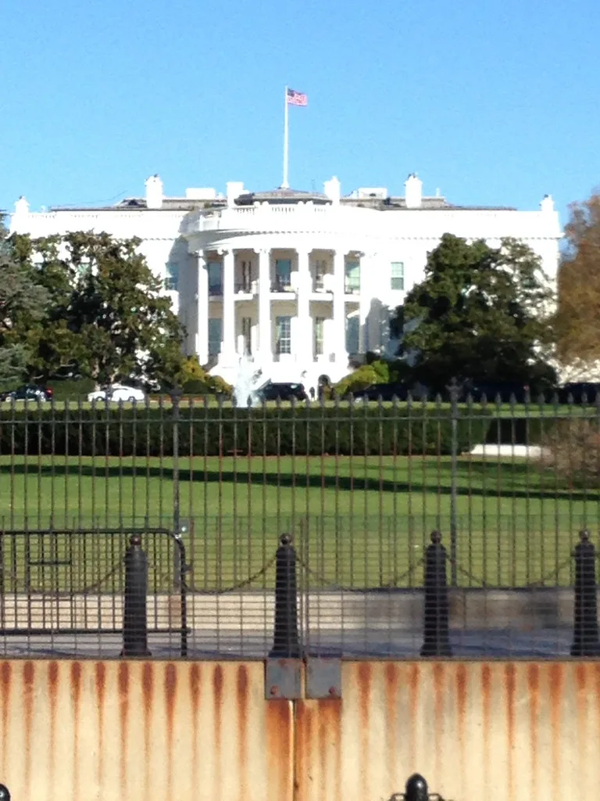

트럼프, 대러 제재 발효 직전 전격 유예…"유가 안정" 중간선거 포석
트럼프 미국 대통령이 발효를 단 이틀 앞둔 대러시아 제재법의 적용을 전격 유예하면서 국제사회에 파장이 일고 있다. 현지시간 16일 트럼프 대통령은 행정명령에 서명해 러시아와 이란을 겨냥한 강경 제재법의 핵심 조항 상당수를 면제했다. 의회를 통과해 법으로 확정된 조치를 시행 직전에 행정명령으로 무력화한 셈이어서, 법 시행을 코앞에 두고 나온 이번 조치의 배경을 둘러싼 해석이 미국 정치권 안팎에서 분분하다.
면제 대상이 된 법은 지난 7월 세상을 떠난 공화당 중진 린지 그레이엄 전 상원의원의 이름을 딴 '그레이엄법'이다. 러시아의 우크라이나 침공에 대한 경제적 압박을 한층 강화하기 위해 마련된 이 법은 지난달 18일 트럼프 대통령이 서명했고, 한 달의 유예기간을 거쳐 이달 18일부터 핵심 조항이 시행될 예정이었다. 법안의 뼈대는 러시아산 원유와 천연가스를 가장 많이 수입하는 5개국이 미국에 수출하는 상품에 최대 100%의 관세를 부과하는 내용으로, 러시아와 거래하는 제3국까지 압박하는 2차 제재 성격을 띠고 있었다.

하지만 시행을 이틀 앞두고 트럼프 대통령은 이 법에 담긴 제재와 관세, 규제 조항의 적용을 상당 부분 면제하는 행정명령에 서명했다. 동시에 러시아산 디젤 수입에도 합의한 것으로 전해졌다. 의회가 거의 전원 합의로 통과시킨 초강경 제재법이, 발효를 앞두고 대통령의 행정명령 한 번으로 사실상 유명무실해진 모양새가 됐다. 법이 만들어진 지 불과 한 달 만에 그 핵심 조항이 멈춰선 셈이다.
이번 조치의 배경으로는 3주 앞으로 다가온 중간선거가 꼽힌다. 선거를 앞두고 국내 유가가 치솟는 상황을 서둘러 진정시키려는 포석이라는 분석이 지배적이다. 러시아산 에너지 공급이 늘어나면 국제 원유 시장의 공급 부담이 줄어 유가 안정에 도움이 될 수 있다는 계산이 깔려 있다는 것이다. 중간선거를 앞두고 물가와 유가 같은 생활 밀착형 지표가 악화되는 것을 막아야 한다는 정치적 셈법이 외교·안보 정책보다 우선시됐다는 평가도 나온다.
러시아는 즉각 환영의 뜻을 밝혔다. 러시아 측은 이번 조치를 두고 "역사적인 순간"이라는 반응을 내놓으며 반겼다. 강경 제재 법안이 시행 직전 사실상 무력화된 것을 두고 외교적 성과로 받아들이는 분위기가 역력하며, 제재 완화가 이어지면 그만큼 러시아의 협상 입지도 넓어질 수 있다는 기대감도 엿보인다.
반면 우크라이나는 거세게 반발했다. 젤렌스키 우크라이나 대통령은 미국의 이번 결정에 공개적으로 불만을 표시하며, 러시아를 향한 경제적 압박이라는 핵심 지원 수단이 사라질 수 있다는 우려를 드러냈다. 우크라이나 전쟁이 여전히 끝을 보이지 않는 가운데, 서방의 대러 제재 공조에 균열이 생길 수 있다는 우려가 유럽 내부에서도 함께 커지는 대목이다.
미국 정치권 내부에서도 이번 조치를 둘러싼 논쟁이 이어지고 있다. 유가 안정이라는 명분과 별개로, 의회를 통과한 제재법의 취지를 행정부가 행정명령으로 우회했다는 비판이 야당은 물론 일부 여당 의원들 사이에서도 나오는 한편, 중간선거를 앞둔 민생 부담 완화를 위한 불가피한 조치였다는 반론도 맞서고 있다. 이번 유예 조치가 실제 국제 유가와 러시아·우크라이나 전쟁 흐름, 그리고 다가올 중간선거 판세에 어떤 영향을 미칠지 주목된다.